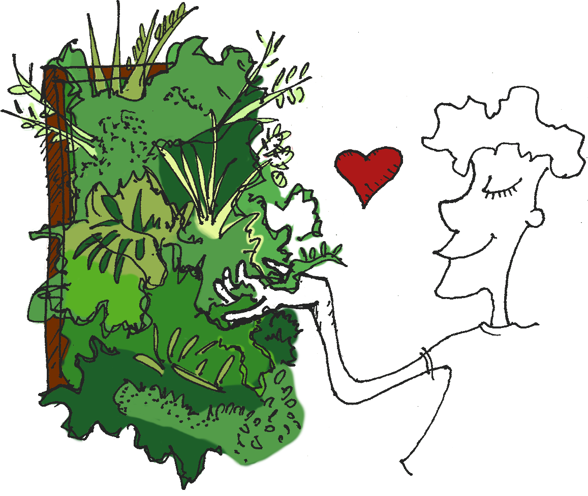

Arte
Vegetal
Nuestros Jardines Verticales están equipados con la última tecnología en sistemas de fertirrigación e iluminación automatizados. Contamos con la validez y el soporte de “Paisajismo Urbano”, empresa líder con 10 años de experiencia en el diseño y construcción de jardines verticales en todo el mundo.
-

Asesoría paisajística
-
Jardines verticales y cuadros vivos
-
Servicio de mantenimiento
-
Iluminación de jardines
-
Fertirrigación automática
Nuestros
Jardines
{kind=link}
{kind=link}
{kind=link}
Jardín Al río
Jardín interior de 8m² realizado en Febrero de 2016 concretado en un plazo de 3 días. Fueron plantadas más de 240 plantas.
Galería{kind=link}
{kind=link}
{kind=link}
La familia primero
Tito fue de nuestros primeros mecenas y consejeros, juntos construimos el jardín de 6m² de su casa (Rosario, Santa Fé)
Galería{kind=link}
El Jardín Isósceles
Este jardín vertical exterior de más de 4m² fue realizado para el estudio de paisajismo Puerto Jardín en Nuñez (Ciudad de Bs. As)
Galería{kind=link}
{kind=link}
{kind=link}
Plantamos un árbol
Revestimos una columna con más de 100 plantas de 17 especies distintas de sotobosque tropical.
Galería{kind=link}
Amigo Baldomero
Este jardin de 6m² vive en el living de nuestros amigos en Floresta, encuadrado con diferentes maderas recicladas.
Galería{kind=link}
Familia Aguilera
Este jardín vertical de interior de 4m² fue enmarcado en pinotea y cuenta con más de 250 plantas de sotobosque tropical.
Galería{kind=link}
{kind=link}
{kind=link}
Teatro Mandril
Segundo hogar, segundo jardín. Que crece y florece con las innumerables actividades que allí germinan.
Galería{kind=link}
{kind=link}
{kind=link}
Hogar, dulce laboratorio
Nuestro primer jardín vertical experimental, realizado en su mayoría con materiales reciclados. Boedo, 2012.
Galería{kind=link}
{kind=link}
{kind=link}